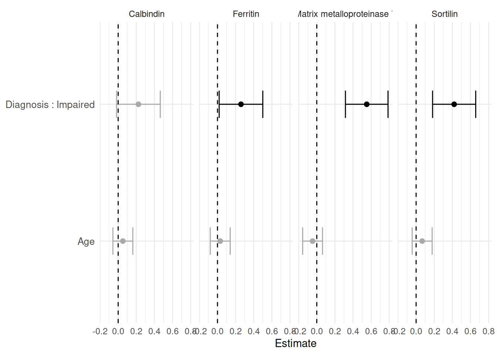
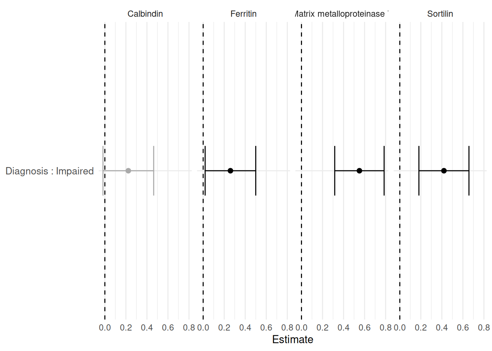
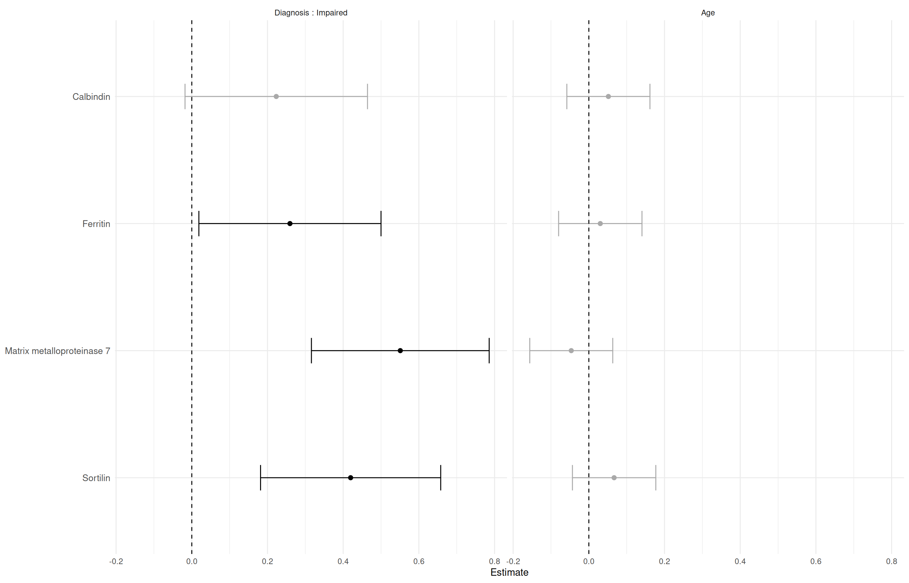
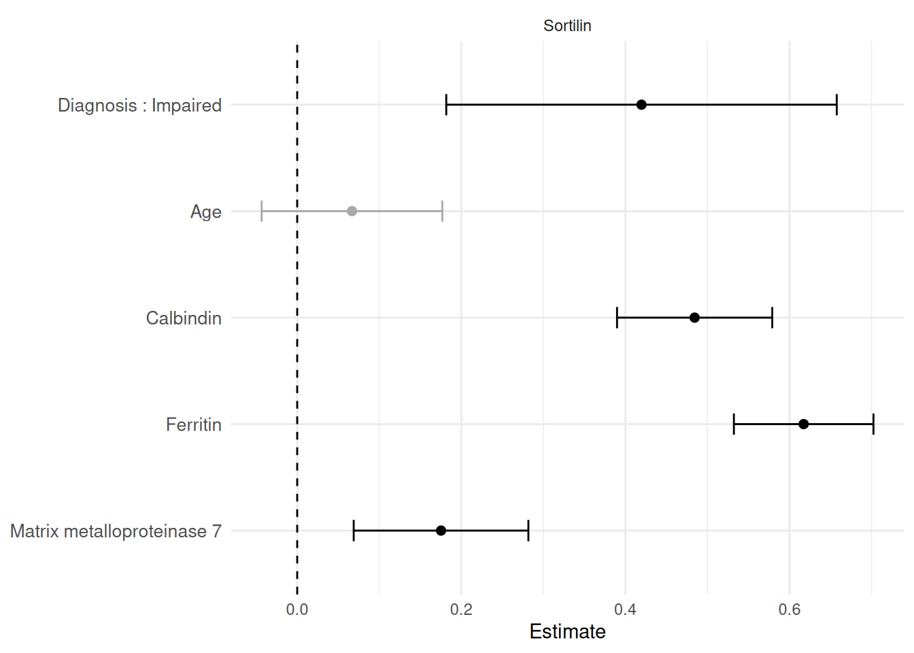
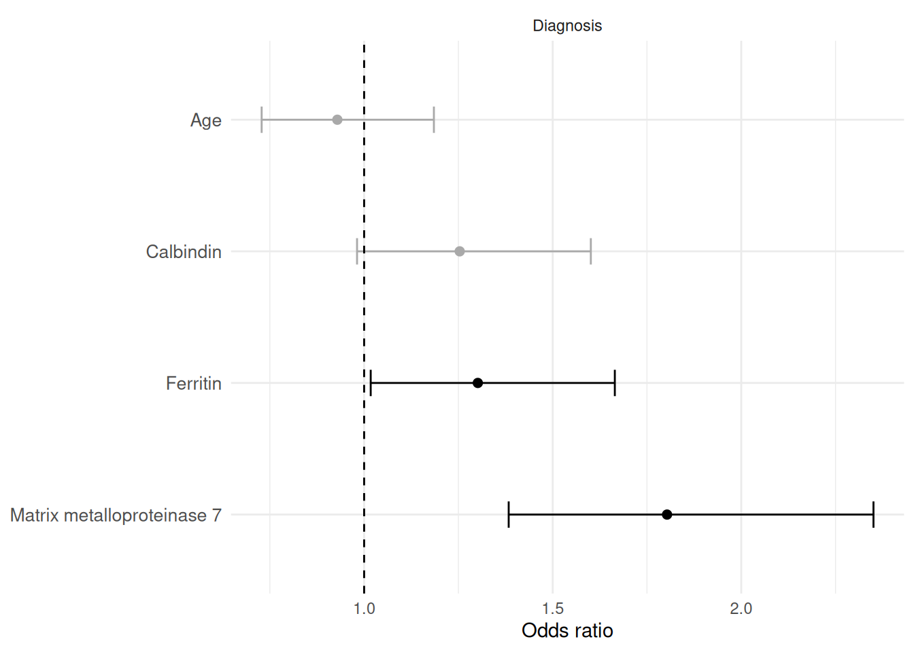

1 Overview
PlotForestFromTable() visualizes the estimates and confidence intervals from a MakeUnivariateRegressionTable() object. It plots from the tidy Results dataframe that MakeUnivariateRegressionTable() returns, and it also accepts that dataframe directly, so you can filter or reorder results before plotting.
The default layout is:
- facets = outcomes
- rows = predictors or predictor levels
- x-axis = regression estimate
Use Flip = TRUE when it is easier to read outcomes as rows and predictors as facets.
Note
PlotForestFromTable()was previously namedplotForestFromTable(). The old name still works as a backwards-compatible synonym, so existing scripts continue to run.
2 Load packages
3 Load example data
The examples use SampleData and SampleVariableTypes, then apply labels and recoding with RevalueData().
data("SampleData")
data("SampleVariableTypes")
RevaluedObj <- RevalueData(
SampleData,
SampleVariableTypes
)
df_Revalued <- RevaluedObj$RevaluedData4 Many outcomes and predictors
This is a common screening pattern: several outcomes tested against several predictors.
vars_Outcomes <- c(
"Calbindin",
"Ferritin",
"MMP7",
"Sortilin"
)
vars_Predictors <- c(
"Diagnosis",
"age"
)
Reg_Obj_Outcomes <- MakeUnivariateRegressionTable(
data = df_Revalued,
outcome_vars = vars_Outcomes,
predictor_vars = vars_Predictors,
Standardize = TRUE
)5 Default forest plot
The default plot keeps outcomes as facets and terms as rows.
PlotForestFromTable(Reg_Obj_Outcomes)
Black points indicate p < 0.05; grey points are not significant. The dashed vertical line is the null value for linear estimates.
6 Plot from the Results dataframe
The plot is drawn from Reg_Obj_Outcomes$Results, and you can pass that dataframe (or any subset of it) directly. This makes it easy to plot only the rows you care about.
Reg_Obj_Outcomes$Results %>%
filter(Predictor == "Diagnosis") %>%
PlotForestFromTable()
7 Flip outcomes and predictors
When there are many outcomes and a small predictor set, Flip = TRUE is often easier to read.
PlotForestFromTable(
Reg_Obj_Outcomes,
Flip = TRUE
)
With Flip = TRUE, predictors or predictor levels become facets, and outcomes become rows.
8 Many predictors, one outcome
For one outcome and many predictors, the default layout is usually already compact.
Reg_Obj_Predictors <- MakeUnivariateRegressionTable(
data = df_Revalued,
outcome_vars = "Sortilin",
predictor_vars = c("Diagnosis", "age", "Calbindin", "Ferritin", "MMP7"),
Standardize = TRUE
)
PlotForestFromTable(Reg_Obj_Predictors)
9 Labels
Forest plot facets and rows use labels inherited from SampleVariableTypes through RevalueData(). If labels are missing, the plot falls back to the variable names.
Reg_Obj_Outcomes$Metadata$Outcomes Outcome OutcomeLabel OutcomeFamily ReferenceLevel EventLevel
1 Calbindin Calbindin linear <NA> <NA>
2 Ferritin Ferritin linear <NA> <NA>
3 MMP7 Matrix metalloproteinase 7 linear <NA> <NA>
4 Sortilin Sortilin linear <NA> <NA>Categorical and dichotomous predictors are shown with the modeled level, for example Diagnosis : Impaired.
10 Logistic models
MakeUnivariateRegressionTable() uses logistic regression automatically for two-level outcomes and reports odds ratios by default.
Reg_Obj_Logistic <- MakeUnivariateRegressionTable(
data = df_Revalued,
outcome_vars = "Diagnosis",
predictor_vars = c("age", "Calbindin", "Ferritin", "MMP7"),
Standardize = TRUE
)
Reg_Obj_Logistic$FormattedTable| Variable | Effect | N | Estimate (95% CI) | p-value |
|---|---|---|---|---|
| Diagnosis | ||||
| Age | Odds ratio | 322 | 0.929 (0.728, 1.18) | 0.55 |
| Calbindin | Odds ratio | 333 | 1.25 (0.981, 1.6) | 0.071 |
| Ferritin | Odds ratio | 333 | 1.3 (1.02, 1.66) | 0.036 |
| Matrix metalloproteinase 7 | Odds ratio | 333 | 1.8 (1.38, 2.35) | <0.001 |
Reg_Obj_Logistic$Metadata$Outcomes Outcome OutcomeLabel OutcomeFamily ReferenceLevel EventLevel
1 Diagnosis Diagnosis logistic Control Impaired
PlotForestFromTable(Reg_Obj_Logistic)
For logistic models, check the event level in Metadata$Outcomes before interpreting odds ratios. Mixed linear and logistic forest plots can be visually convenient, but they combine different effect scales.
11 Reproducibility
# save.image("PlotForestFromTable_workspace.RData")
print(sessionInfo())R version 4.6.1 (2026-06-24)
Platform: x86_64-pc-linux-gnu
Running under: Ubuntu 24.04.4 LTS
Matrix products: default
BLAS: /usr/lib/x86_64-linux-gnu/openblas-pthread/libblas.so.3
LAPACK: /usr/lib/x86_64-linux-gnu/openblas-pthread/libopenblasp-r0.3.26.so; LAPACK version 3.12.0
locale:
[1] LC_CTYPE=C.UTF-8 LC_NUMERIC=C LC_TIME=C.UTF-8
[4] LC_COLLATE=C.UTF-8 LC_MONETARY=C.UTF-8 LC_MESSAGES=C.UTF-8
[7] LC_PAPER=C.UTF-8 LC_NAME=C LC_ADDRESS=C
[10] LC_TELEPHONE=C LC_MEASUREMENT=C.UTF-8 LC_IDENTIFICATION=C
time zone: UTC
tzcode source: system (glibc)
attached base packages:
[1] stats graphics grDevices utils datasets methods base
other attached packages:
[1] dplyr_1.2.1 SciDataReportR_20.18.0
loaded via a namespace (and not attached):
[1] gtable_0.3.6 xfun_0.60 bayestestR_0.18.1
[4] ggplot2_4.0.3 insight_1.5.2 rstatix_1.1.0
[7] lattice_0.22-9 paletteer_1.7.0 vctrs_0.7.3
[10] tools_4.6.1 generics_0.1.4 datawizard_1.3.1
[13] tibble_3.3.1 pkgconfig_2.0.3 RColorBrewer_1.1-3
[16] correlation_0.8.8 S7_0.2.2 RcppParallel_6.2.0
[19] gt_1.3.0 lifecycle_1.0.5 compiler_4.6.1
[22] farver_2.1.2 carData_3.0-6 snakecase_0.11.1
[25] sass_0.4.10 htmltools_0.5.9 yaml_2.3.12
[28] Formula_1.2-5 pillar_1.11.1 car_3.1-5
[31] tidyr_1.3.2 statsExpressions_2.0.0 abind_1.4-8
[34] tidyselect_1.2.1 sjlabelled_1.2.0 digest_0.6.39
[37] mvtnorm_1.4-2 gtsummary_2.5.1 purrr_1.2.2
[40] rematch2_2.1.2 labeling_0.4.3 forcats_1.0.1
[43] ggstatsplot_1.0.0 labelled_2.16.0 fastmap_1.2.0
[46] grid_4.6.1 cli_3.6.6 magrittr_2.0.5
[49] patchwork_1.3.2 dichromat_2.0-1 broom_1.0.13
[52] withr_3.0.3 scales_1.4.0 backports_1.5.1
[55] estimability_2.0.0 rmarkdown_2.31 emmeans_2.0.4
[58] otel_0.2.0 hms_1.1.4 coda_0.19-4.1
[61] evaluate_1.0.5 knitr_1.51 haven_2.5.5
[64] parameters_0.29.2 rstantools_2.7.0 rlang_1.3.0
[67] xtable_1.8-8 glue_1.8.1 xml2_1.6.0
[70] jsonlite_2.0.0 effectsize_1.0.3 R6_2.6.1
[73] fs_2.1.0